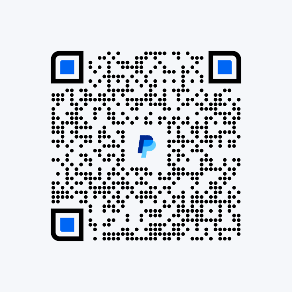

Style Studio Pro
Individuelle Farben, transparente Oberflächen, Icons und Dock-Anpassung.
In Entwicklung
Ein Linux-basiertes Betriebssystemprojekt mit eigener Designsprache, modularen Werkzeugen und der Vision einer flexiblen, individuell gestaltbaren Desktop-Erfahrung.
Visuelle Entwürfe für Bootscreen, Anmeldung und Desktop. Diese Bilder sind Designvorschauen und keine Belege für bereits vollständig implementierte Funktionen. Antippen zum Vergrößern.
Die Funktionsbereiche befinden sich in unterschiedlichen Entwicklungsphasen. Die Kennzeichnung zeigt, was bisher vorbereitet ist und was als Ziel geplant bleibt.
Individuelle Farben, transparente Oberflächen, Icons und Dock-Anpassung.
In EntwicklungGit-Werkzeuge, Codeeditoren und Projektverwaltung.
Teilweise vorbereitetLinux-Apps sowie Windows- und Android-Anwendungen, soweit kompatibel.
GeplantIsolierte Analyse-, Diagnose- und Sicherheitstestumgebungen.
GeplantLokale Datenträger, NAS und Cloud mit Wiederherstellungsoptionen.
GeplantHardwareüberwachung und nachvollziehbare Reparaturvorschläge.
GeplantKeine öffentliche stabile ISO-Freigabe bestätigt. Downloads werden erst angeboten, sobald ein Build ausreichend geprüft und zur Veröffentlichung freigegeben wurde.

SAN1Y OS steht für die Idee, moderne Gestaltung, technische Freiheit und flexible Systemwerkzeuge in einem eigenen Linux-basierten Projekt zu vereinen.
Ein Projekt. Eine Vision. NEXT LEVEL.
SAN1Y OS wird weiterentwickelt. Ein öffentlicher Systemdownload ist noch nicht freigegeben.
GitHub-Profil besuchenDu möchtest die unabhängige Entwicklung unterstützen oder eine Zusammenarbeit vorschlagen? Hier findest du die passenden Kontaktmöglichkeiten.
Freiwillige Spenden helfen bei der Weiterentwicklung von SAN1Y OS. Es besteht keine Verpflichtung zu spenden.

PayPal-QR-Code scannen oder den Link öffnen.
Für Projektideen, technische Zusammenarbeit, Feedback oder andere Anfragen rund um SAN1Y OS.
E-Mail schreibenBitte keine Passwörter, vertraulichen Daten oder Zugangscodes per E-Mail senden.